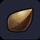
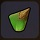
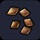
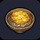
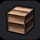
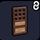
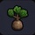
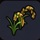

|
벼 씨앗 |
고개 숙인 이삭에 황금빛 낟알이 열리는 씨앗
■ 깨끗한 논에 심으면 모종이 싹튼다 |
소박소박섬 |
/ |
 |
메밀 씨앗 |
단단한 갈색 껍질로 감싸인 낟알이 열리는 씨앗
■ 밭에 심으면 모종이 싹튼다 |
소박소박섬 |
/ |
 |
대나무 씨앗 |
긴 통 모양의 튼튼한 식물의 씨앗
■ 심으면 묘목이 자란다 |
소박소박섬 |
/ |
 |
지팡구의 악보 |
추억이 되살아나는 악보
■ "지팡구" 연주 가능 |
풀 실 10 |
텅 빈 섬 작업대 |
|
벼 |
익혀 먹으면 맛있는 하얀 곡물 |
소박소박섬
논에서 수확 |
/ |
 |
메밀 |
갈아 먹으면 맛있는 작은 열매 |
소박소박섬
밭에서 수확 |
/ |
|
오므라이스 |
볶은 밥을 달걀로 감싼 요리
■ 조리시간 : 45초
■ 만복 55% 회복 ■ HP 10 회복 |
벼 1
달걀 1 |
2칸 조리대 이상 |
|
연어 주먹밥 |
안에 연어가 들어 있는 주먹밥
■ 조리시간 : 45초
■ 만복 50% 회복 ■ HP 15 회복 방어력 상승 |
벼 1
연어 1 |
2칸 조리대 이상 |
|
경탄 |
쌀가루로 동그랗게 빚어 달콤하게 맛을 낸 요리
■ 조리시간 : 45초
■ 만복 25% 회복 ■ HP 20 회복 |
벼 1
수수 1 |
2칸 조리대 이상 |
|
초밥 |
밥 위에 생선을 썰어 올린 요리
■ 조리시간 : 30초
■ 만복 35% 회복 ■ HP 15 회복 방어력 상승 |
생선 1
벼 1 |
2칸 조리대 이상 |
|
오야코동 |
닭고기와 계란을 사용한 볼륨 만점 요리
■ 조리시간 : 100초
■ 만복 90% 회복 ■ HP 15 회복 공격력 상승 |
벼 1
닭고기 1
달걀 1 |
3칸 조리대 이상 |
|
판 메밀국수 |
알차게 담은 메일국수에 고추냉이를 곁들인 면 요리
■ 조리시간 : 30초
■ 만복 50% 회복 ■ HP 25 회복 독 내성 상승 |
메밀 1
파 1
고추냉이 1 |
3칸 조리대 이상 |
 |
튀김 메밀국수 |
따뜻한 메밀국수에 야채튀김을 얹은 요리
■ 조리시간 : 100초
■ 만복 55% 회복 ■ HP 20 회복 |
야채 1
메밀 1
기름 1 |
3칸 조리대 이상 |
|
쌀 음료 |
영양 가득한 쌀로 만든 단 음료
■ 조리시간 : 10초
■ 만복 10% 회복 ■ HP 10 회복 ST 소모 감소 |
벼 1 |
술통 |
|
최고급 슬라임 고기 만두 |
슬라임 모양의 따끈따끈한 최고급 고기 만두
■ 조리시간 : 45초
■ 만복 50% 회복 ■ HP 10 회복 공격력 상승 |
벼 1
드래곤 고기 1 |
2칸 조리대 이상 |
|
최고급 햄버거 |
촉촉하게 구워낸 최고급 고기를 빵 사이에 끼운 것
■ 조리시간 : 100초
■ 만복 85% 회복 ■ HP 15 회복 공격력 상승 |
드래곤 고기 1
벼 1
상급야채 1 |
3칸 조리대 |
|
고급 빵 |
곡물 가루를 반죽해 둥글게 구운 고급 빵
■ 조리시간 : 30초 ■ 만복 35% 회복 ■ HP 5 회복 |
메밀 1 |
1칸 조리대 이상 |
|
최고급 빵 |
곡물 가루를 반죽해 둥글게 구운 최고급 빵
■ 조리시간 : 30초 ■ 만복 40% 회복 ■ HP 5 회복 |
벼 1 |
1칸 조리대 이상 |
|
최고급 파스타 |
최고급 야채를 볶아 버무린 파스타
■ 조리시간 : 45초
■ 만복 55% 회복 ■ HP 10 회복 |
상급야채 1
벼 1 |
2칸 조리대 이상 |
|
최고급 과일 파이 |
최고급 과일을 잔뜩 넣은 파이
■ 조리시간 : 45초
■ 만복 40% 회복 ■ HP 15 회복 |
벼 1
상급과일 1 |
2칸 조리대 이상 |
|
고급 판 메밀국수 |
알차게 담은 메일국수에 고급 고추냉이를 곁들인 면 요리
■ 조리시간 : 30초
■ 만복 60% 회복 ■ HP 25 회복 독 내성 상승 |
메밀 1
파 1
실버 고추냉이 1 |
3칸 조리대 이상 |
 |
겹널빤지 벽 |
나무판을 겹쳐 만든 벽 |
목재 5 |
텅 빈 섬 작업대 |
|
운치있는 벽 |
운치 있는 분위기가 감도는 벽
■ 색 변경 가능 |
목재 4
화지 1 |
텅 빈 섬 작업대 |
|
다다미 |
말린 식물을 엮어서 만든 바닥
■ 나란히 세우면 연결된다 |
풀 실 5 |
텅 빈 섬 작업대 |
|
굵은 자갈 바닥 |
동그래진 작은 돌을 깐 바닥
※ 도토리를 심으면 소나무가 자란다 |
석재 5 |
텅 빈 섬 작업대 |
 |
나무 미닫이 |
격자 무늬 미닫이
■ 나란히 세우면 방향이 바뀌는 문 |
목재 3 |
텅 빈 섬 작업대 |
|
맹장지문 |
나무로 만든 틀에 종이를 붙인 일본풍 문
■ 나란히 세우면 방향이 바뀌는 문 / 색 변경 가능 |
목재1
화지 2 |
텅 빈 섬 작업대 |
|
장지문 |
나무로 만든 틀에 화지를 붙여 만든 슬라이드 박식 문
■ 나란히 세우면 방향이 바뀌는 문 |
목재1
화지 2 |
텅 빈 섬 작업대 |
|
세로무늬 벽 |
목재를 가공해서 세로로 놓은 칸막이 벽
■ 색 변경 가능 |
목재 5 |
텅 빈 섬 작업대 |
|
장지창 |
나무로 만든 틀에 화지를 붙여 만든 작은 창 |
목재1
화지 2 |
텅 빈 섬 작업대 |
|
교창 |
방 경계의 천장 등에 다는 장식
■ 색 변경 가능 |
목재 4 |
텅 빈 섬 작업대 |
|
줄사다리 |
새끼줄로 짜서 만든 발판
■ 벽에 걸면 1단 위로 올라갈 수 있다 |
목재 1
실 2 |
텅 빈 섬 작업대 |
|
기와지붕 |
기와로 만든 지붕
■ 모서리에 놓으면 모양이(2가지) 변화 |
흙 2 |
텅 빈 섬 작업대 |
|
기와지붕 - 판 |
기와로 만든 지붕의 판 |
흙 2 |
텅 빈 섬 작업대 |
|
기와지붕 장식 |
기와로 만든 지붕 장식 |
흙 2 |
텅 빈 섬 작업대 |
|
도깨비기와 |
기와지붕 끝에 다는 용의 얼굴을 본뜬 장식 |
흙 1 |
텅 빈 섬 작업대 |
|
석등롱 |
돌로 만든 등불 |
석재 2
기름 2 |
텅 빈 섬 작업대 |
|
초롱불 |
따뜻한 불빛이 나오는 초롱
■ 색 변경 가능 |
화지 2 |
텅 빈 섬 작업대 |
|
이불 |
솜으로 만들어 바닥 위에 깔아서 사용하는 침상
■ 잠 잘 수 있는 가구 / 색 변경 가능 |
솜 4 |
텅 빈 섬 작업대 |
|
밥상 |
둥글고 큰 낮은 탁자 |
목재 6 |
텅 빈 섬 작업대 |
|
코타츠 |
추운 겨울에 들어가고 싶은 가구
■ 색 변경 가능 |
목재 4
솜 4 |
텅 빈 섬 작업대 |
|
경단 세트 |
경단을 잔뜩 올려놓은 것
■ 요리를 담을 수 있다 |
경단 1
식기 1 |
텅 빈 섬 작업대 |
|
주먹밥 세트 |
다양한 속을 넣은 주먹밥을 가득 담은 것
■ 요리를 담을 수 있다 |
연어 주먹밥 1
대나무 1 |
텅 빈 섬 작업대 |
|
오동나무 장롱 |
의상을 수납할 수 있는 고상한 장롱
■ 아이템을 수납할 수 있다 |
목재 6 |
텅 빈 섬 작업대 |
|
족자 |
사진을 장식하기 위한 걸개
■ 모두의 사진을 볼 수 있다 |
화지 4
실 1 |
텅 빈 섬 작업대 |
|
카타나 장식 |
질 좋은 철을 두드려 만든 날카로운 칼 |
철괴 5
목재 1 |
텅 빈 섬 작업대 |
|
게다 |
나무판에 조각을 덧댄 신발 |
목재 1
대나무 1
실 1 |
텅 빈 섬 작업대 |
|
쌀가마니 |
말린 풀로 엮은 짚으로 만든 가마니 |
풀 실 4
쌀 6 |
텅 빈 섬 작업대 |
|
거대 나무망치 조각상 |
거대 나무망치 모양을 한 고마운 석상 |
석재 3
솜 1 |
텅 빈 섬 작업대 |
|
시시오도시 |
물을 흘려보내면 정기적으로 소리가 나는 풍취 있는 장식
■ 뒷편에 물을 플려보내 사용 |
석재 2
대나무 3 |
텅 빈 섬 작업대 |
|
물레방아 |
물속에 두면 회전하는 물레방아
■ 옆에 있는 스위치를 정기적으로 누름다 / 색 변경 가능 |
목재 12 |
텅 빈 섬 작업대 |
|
커다란 종 |
울리면 낮은 소리가 나는 큰 종 |
동괴 15 |
텅 빈 섬 작업대 |
 |
소나무 모종 |
소나무의 모종
■ 심으면 소나무 묘목이 자란다 |
굵은 자갈 바닥에 도토리를 심고 자랄때 모종상태로 회수 |
/ |
|
어린 소나무 |
뾰족뾰족한 잎을 지닌 소나무 묘목 |
소박소박섬 |
/ |
|
소나무 |
근사하게 성장한 소나무 |
소박소박섬 |
/ |
|
죽순 |
대나무 씨앗에서 자라는 어린 싹 |
소박소박섬 / 대나무 씨앗을 심고 자랄때 회수 |
/ |
|
대나무 |
튼튼하게 자란 원통형 식물로 가구 재료가 된다
■ 나란히 세우면 모양(3가지)이 변화 |
소박소박섬 |
/ |
 |
벼 |
고개 숙인 이삭에 황금빛 낟알이 열리는 작물 |
논에서 재배
소박소박섬 |
/ |
|
메밀 |
작은 갈색 열매가 열리는 작물 |
밭에서 재배
소박소박섬 |
/ |
|
화지 |
대나무를 재료로 만든 아름다운 종이 |
대나무 1
풀 실 1 |
텅 빈 섬 작업대 |